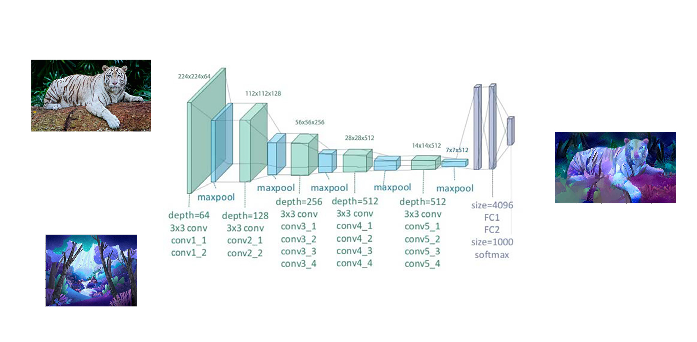
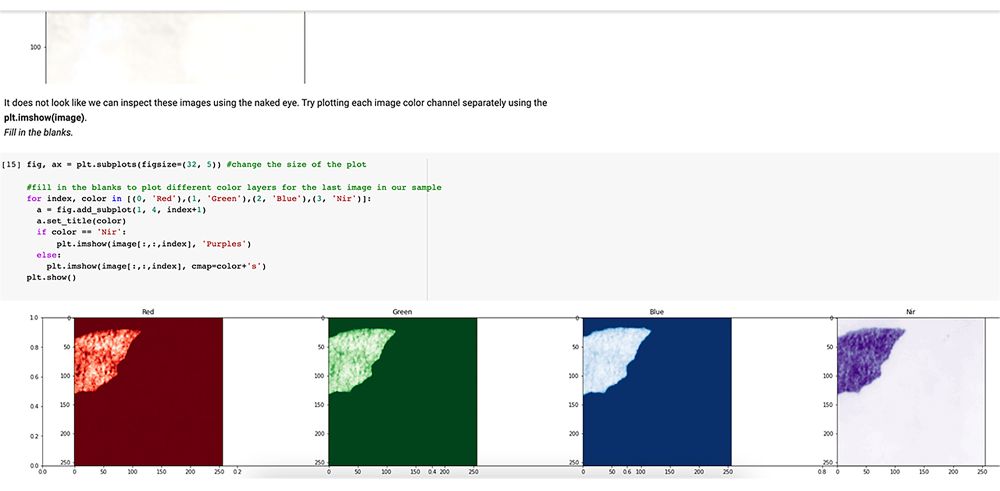

Mona Anvari
Hi I am Mona! I am a computer scientist (AI concentration) in training, Stanford student and AI teacher curriculum developer for INSPIRIT AI .
Projects
-
 Neural Style Transfer Reddit Wallpaper
In this independant project, I combined webscrapping and Neural Style Transfer to generate unique images. I used VGG19 and Total variation loss to create the model. -
 Understanding Human Activity in the Amazon Basin
In this project I created a step by step notebook detailing the steps towards performing multi-label classification task on a dataset consisting of satelite iimagery of the Amazon basin. The notebook explains how to preprocess the data, create a base model and adopt improvements.
Work Experience
See my complete work history on

Teacher & curriculum developer
INPIRIT AI
Sept 2020 - Present
I teach weekly sessions on AI topics including vision, CNNs and NLP. I also develop AI projects as part of the curriculum development team.
Undergraduate Student Researcher
Stanford Vision and Learning Lab
Jun 2020 - Sept 2020
I worked on a project involving Robotic Task Manipulation and Computer Vision, helped with data collection and implemented my own A3C agent using Tensorflow.
Coding and Robotics Coach
MDUSD
Summer 2018
I lectured students on topics such as coding, robotics and their real world applications. I Provided one-on-one mentorship that resulted in projects adressing real world needs.